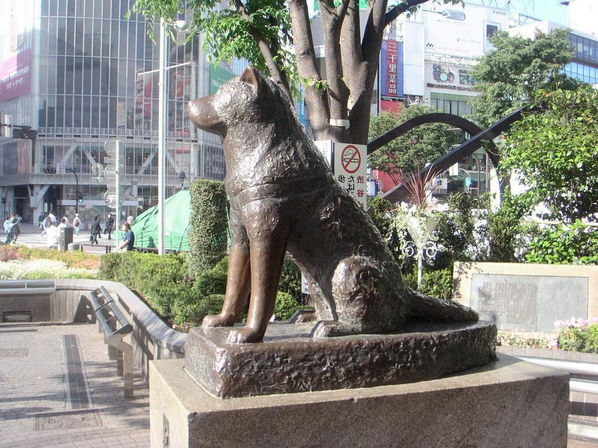

Памятник
Первый памятник собаке по кличке Хатико был воздвигнут еще при его жизни, почти за год до смерти - 21 апреля, на открытии монумента присутствовал и сам герой. Вторая мировая война заставила власти убрать памятник и расплавить его для нужд японской армии. Но о собаке не забыли и вернули на прежнее место копию памятника в 1947 году. Второй памятник менее известен, его установили в городе Одате на привокзальной площади. К сожалению, Вторая мировая забрала на нужды армии и его. Но опять же, копию установили в 1987 году. Сегодня памятник псу Хатико - это не только воспоминания о собаке, но и дань преданности, верности породы акита-ину. Наверняка невозможно найти более популярных мест для назначения свиданий, чем площадь, на которой стоит памятник легендарному верному псу Хатико, реальная история которого поразила своей драматичностью весь мир!